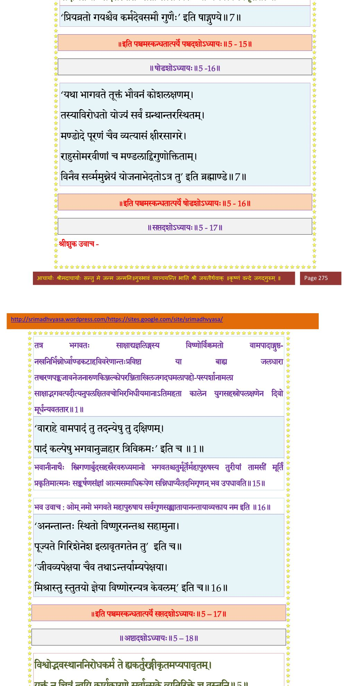

स्कन्ध 5 · अध्याय 15
श्लोक १
श्रीशुक उवाच–
भरतस्यात्मजः सुमतिर्नामाऽभिहितो यमु ह वाव केचित्पाषण्डिनो विलोक्य ऋषभपदवीमनुवर्तमानमनार्या अवेदसमाम्नातां देवतां स्वमनीषया पापीयसीं कलौ कल्पयिष्यन्ति ।। १ ।।
भरतस्यात्मजः सुमतिर्नामाऽभिहितो यमु ह वाव केचित्पाषण्डिनो विलोक्य ऋषभपदवीमनुवर्तमानमनार्या अवेदसमाम्नातां देवतां स्वमनीषया पापीयसीं कलौ कल्पयिष्यन्ति ।। १ ।।
श्लोक २
तस्माद्गृध्रसेनायां देवपादिर्नाम पुत्रोऽभवत् ।। २ ।।
श्लोक ३
अथासुर्यां तत्तनयो देवद्युम्नस्ततो धेनुमत्यां सुतः परमेष्ठी तस्य सुवर्चलायां प्रतीह उपजातः य आत्मविद्यायां स्वयमखिलायां संसिद्धो महापुरुष-मनुसस्मार ।। ३ ।।
श्लोक ४
प्रतीहात्सुबलायां प्रतिहर्त्रादयस्त्रय आसन् इज्याकोविदाः सूनवः प्रतिहर्तुः स्तुत्यां व्योमभूमानावजनिषाताम् ।। ४ ।।
श्लोक ५
व्योम्न ऋषिकुल्यायामुद्गीथः ततः प्रस्तोता देवकुल्यायां प्रस्तोतु-र्विरुरुत्सायां हृदयज आसीद्विभुः विभोरत्यां च पृथुषेणस्तस्मान्नक्त आकूत्यां जज्ञे नक्ताद्रतिपुत्रो गयो राजर्षिप्रवर उदारश्रवा अजायत साक्षा-द्भगवतो विष्णोर्जगदभिरक्षया गृहीतसत्वस्य कलात्मवत्ताभिलक्षणेन महापुरुषतां प्राप्तः ।। ५ ।।
श्लोक ६
स वै स्वधर्मेण प्रजापालनपोषणप्रीणनोपलालनानुशासनलक्षणेनेज्यादिना च भगवति महापुरुषे परब्रह्मणि सर्वात्मनाऽर्पितपरमार्थलक्षणेन ब्रह्म-विच्चरणानुसेवयाऽऽपादितभगवद्भक्तियोगेन चाभीक्ष्णशः परिभावित-विशुद्धसत्व उपरतानात्म्ये आत्मनि स्वयमुपलभ्यमानब्रह्मानुभावोऽपि निरभिमान एवावनिमजुगुपत् ।। ६ ।।
श्लोक ७
तस्येमां गाथां पाण्डवेय पुराविद उपगायन्ति ।
गयं नृपं कः प्रतियाति कर्मभिर्यज्वाभिमानी बहुविद्धर्मगोप्ता ।।
सदागतश्रीः सदसस्पतिः सतां सत्सेवकोऽन्यो भगवत्कलामृते।। ७ ।।
गयं नृपं कः प्रतियाति कर्मभिर्यज्वाभिमानी बहुविद्धर्मगोप्ता ।।
सदागतश्रीः सदसस्पतिः सतां सत्सेवकोऽन्यो भगवत्कलामृते।। ७ ।।
भागवततात्पर्यनिर्णय

श्लोक ८
यमभ्यषिञ्चन्परया मुदा सतीः सत्याशिषो दक्षकन्याः सरिद्भिः ।
यस्य प्रजानां दुदुहे धराऽऽशिषो यथेप्सिता वै गुणवत्स्नुतोधाः।। ८ ।।
यस्य प्रजानां दुदुहे धराऽऽशिषो यथेप्सिता वै गुणवत्स्नुतोधाः।। ८ ।।
श्लोक ९
छन्दांस्यकामस्य च यस्य कामान् दुदूहुराजह्रुरथो बलिं नृपाः ।
प्रत्याहृता युधि धर्मे च विप्रा यस्याशिषः षष्ठमंशं प्रजाश्च।। ९ ।।
प्रत्याहृता युधि धर्मे च विप्रा यस्याशिषः षष्ठमंशं प्रजाश्च।। ९ ।।
श्लोक १०
यस्याध्वरे भगवानध्वरात्मा मघोनि माद्यत्युरुसोमपीथे ।
श्रद्धा विशुद्धा चलभक्तियोगसमर्पितेज्या फलमाजहार।। १० ।।
श्रद्धा विशुद्धा चलभक्तियोगसमर्पितेज्या फलमाजहार।। १० ।।
श्लोक ११
यत्प्रीणनाद्बर्हिषि देवतिर्यङ्मनुष्यवीरुत्तृणमाविरिञ्चात् ।
प्रीयेत सद्यः स हि विश्व एष प्रीतः स्वयं प्रीतिमगाद्गयस्य।। ११ ।।
प्रीयेत सद्यः स हि विश्व एष प्रीतः स्वयं प्रीतिमगाद्गयस्य।। ११ ।।
श्लोक १२
गयाज्जयन्त्यां चित्ररथः स्वस्तिरवरोधन इति त्रयः पुत्रा बभूवुश्चित्र रथादूर्जायां सम्राडजनिष्ट ।। १२ ।।
श्लोक १३
तत उत्कलायां मरीचिर्मरीचेर्बिन्दुमत्यां बिन्दुमानुदपद्यत तस्मात्सुषेणायां मधुर्नामाभवत् । मधोः सुमनस्यां वीरव्रतस्ततो व्रजायां मन्युप्रमन्यू जज्ञाते मन्योः सत्यायां भुवनस्ततो दोषायां त्वष्टा अजनिष्ट । त्वष्टु-र्विरजोर्विरोचनायां विरजस्य शतजित्प्रवरं पुत्रशतं कन्याश्च विषूच्यां किल जाताः ।। १३ ।।
श्लोक १४
तत्रायं श्लोकः–
प्रैयव्रतं वंशमिमं विरजश्चरमोद्भवः ।
अकरोदत्यलं कीर्त्या विष्णुः सुरगणं यथा ।। १४ ।।
प्रैयव्रतं वंशमिमं विरजश्चरमोद्भवः ।
अकरोदत्यलं कीर्त्या विष्णुः सुरगणं यथा ।। १४ ।।
।। इति श्रीमद्भागवते पञ्चमस्कन्धे पञ्चदशोऽध्यायः ।।